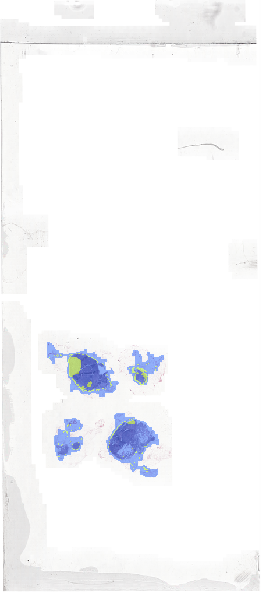

Source-only Bora output
The tumor_038 image, reviewed tissue support, all three full-1,280-channel Virchow2 scales and Bora prediction were independently checked. Its official reference has not yet been scored. Colors in this preview are predictions, not proof of tumor accuracy.
The view is framed around all four reviewed tissue fragments. Exterior glass is omitted from this display and was excluded from Virchow2 tile admission.

The one-slide U-Net and DeepLabV3+ models, prompted MedSAM, VISTA-PATH and binary quality scores remain pending. Back to all 20 test slides